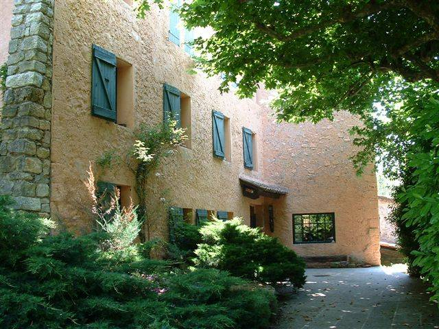
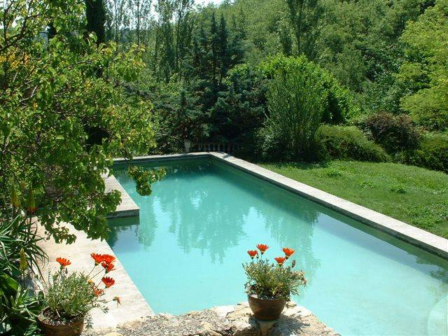
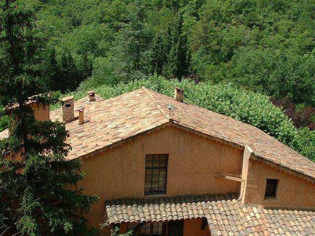

Grand domaine dans les collines de Provence

Un lieu enchanteur enchâssé dans les collines.La
maison principale d'environ 500 mètres carrés est située au milieu d'un domaine
de 140 hectares de collines et de forêts privées.
Le
Mas consiste en 7 chambres principales, 6 salles de bains, 2 cuisines
intérieures et 1 cuisine extérieure.
Une
grande piscine alimentée par une source surplombe les arbres fruitiers, les
collines et les fleurs. Les murs sont en pierre, les poutres en chêne, les
toits sont couverts de tuiles romaines, les sols sont en pierre et lave
vernissée. La maison dispose d'une cave à vin.
Le
domaine est arrosé par des sources qui coulent toute l'année.
Le
Mas est meublé de meubles anciens et comprend une maison de gardien de 200
mètres carrés, un grand garage pour quatre véhicules, et un grenier de 200
mètres carrés. Le chauffage central de 50 kW alimente 45 radiateurs à
ailettes. Il se trouve aussi 5 cheminées et poêle à bois.
Le domaine, situé à soixante minutes de
l'aéroport international de Nice et à 45 minutes en voiture de Cannes,
Saint-Tropez et des gorges du Verdon, offre une parfaite intimité. Les
vignobles de Provence sont à quinze minutes des collines. Artisans et boulangeries
sont à proximité. À 110 kilomètres seulement pour la plus proche se trouvent
deux stations de ski internationales.

Le Mas est situé au-dessus d'un village médiéval. Depuis la route d'accès la vue s'étend jusqu'à la Méditerranée. Le paysage est agrémenté d'arbres fruitiers et de fleurs natives, sans compter le thym, le romarin, et l'origan qui foisonnent.Situation
Situé
dans la région du Haut Var en Provence, à 32 km de la Méditerranée, à une
altitude saine et sèche de 600 mètres.
Maison principale
Construite à l'origine au XVIIe siècle, reconstruite aux normes contemporaines en utilisant des
matériaux historiques.
Le mas est construit en pierres avec des
murs de près d'un mètre d'épaisseur par endroits et possède une toiture de
tuiles romaines.
La surface totale meublée est de 500 mètres
carrés environ.
Forêts
La superficie du domaine est de 140
hectares de collines boisées, principalement de chênes blancs, de pins d'Alep,
d'oliviers, mais aussi de cyprès romains, de cèdres du Liban et de l'Himalaya
de plus de trente-cinq mètres de haut. Bien que situé dans un environnement
méditerranéen très sec, le domaine bénéficie de trois sources d'eau naturelles
qui le maintiennent vert et luxuriant toute l'année.

Surface habitable7 chambres avec 6 salles de bain
2 salons surdimensionnés
2 salles-à-manger
2 cuisines intérieures et 1 cuisine
extérieure entièrement équipées
2 caves à vin
4 terrasses et patios
Piscine alimentée par une source, 15 m sur
6 m
Système
de chauffage central surdimensionné
Maison annexe
Maison séparée, d'environ 200 mètres carrés
au sol, située à courte distance juste au-delà de la limite des arbres, avec un
garage pour 4 véhicules, trois chambres, un salon, une cuisine et une salle de
bain plus un immense grenier au deuxième étage, accessible par camion.
Vous avez des questions: inquiries@le-mas.org